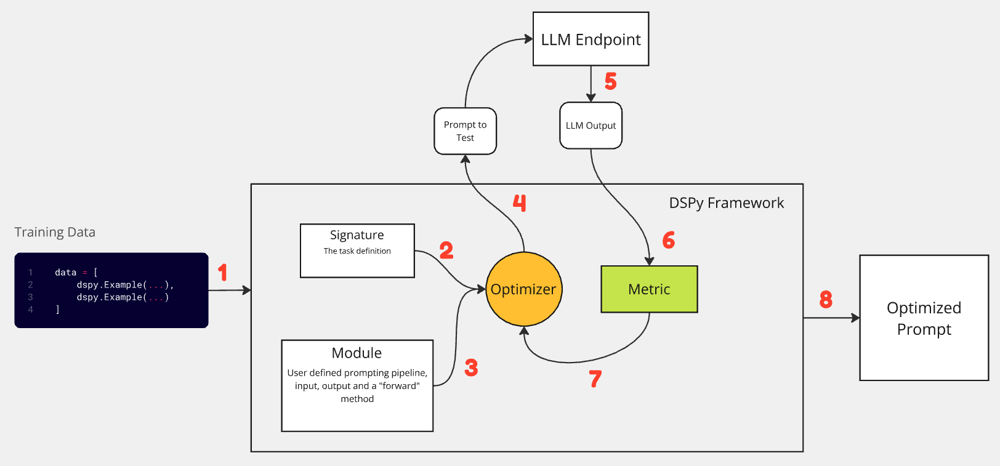

Sep 8, 2024
Overview
https://github.com/stanfordnlp/dspy
Let’s cut to the chase. You want to build a pipeline where you give an input to your system, call a few APIs for your business logic, call an LLM to use the results of those APIs and then generate an output in a fixed format. You could write a few Python scripts to achieve this, deploy it and voila.
Another team or org wants to implement a new pipeline. They repeat the same process. Can this be improved in any way? Yes, DSPy (dee-ess pie) is a tool that attempts to give “structure” to your prompt engineering pipelines. The objective of DSPy is to create a paradigm shift, quoting from the documentation; “Programming-not prompting Language Models”.
But what does DSPy stand for? Declarative Self-improving Language Programs, pythonically. See this FAQ!
Here is an interesting use case of how Gradient AI used DSPy to cut costs while maintaining GPT 4 level performance.
Some Technical Terminology
DSPy introduces the following
- Signatures - to abstract prompts
- Modules - to abstract prompting techniques
- Optimizers - that can tune the prompts (or weights of the LLM) of modules
How to approach DSPy? We can break it down into these 8 steps.
To summarize, given a task where you know your input and output format, you can provide 10-50 examples to DSPy, pick an optimization technique, define a metric and let it generate a prompt that achieves the best performance on that metric.
In addition to remote LLM API endpoints which are publicly available (OpenAI, Cohere, Anyscale and more), DSPy allows you to connect to your locally hosted LLMs as well, see here.
Toy Example
While trying out DSPy, I played with a fairly simple toy problem, to understand what’s happening under the hood.
Given a sentence, the task of the DSPy module is to convert it to upper case and end the sentence with an exclamation. For example,
Input: Hello this is a blog on DSPy
Output: HELLO THIS IS A BLOG ON DSPY!
For this experiment, I used Llama 3.1 8b Instruct.
llm = MyCustomRemoteLM(model="llama-3.1-8b-instruct")
dspy.settings.configure(lm=llm)
Every data point should be an object of dspy.Example
data = [
dspy.Example(
sentence="Hello world how are you",
ans="HELLO WORLD HOW ARE YOU!"
).with_inputs("sentence"),
dspy.Example(
sentence="This is a blog post",
ans="THIS IS A BLOG POST!"
).with_inputs("sentence"),
.
.
.
]
Define a signature
class UpperYay(dspy.Signature):
"""Convert the sentence to upper case and end the sentence with an exclamation mark."""
sentence = dspy.InputField()
ans = dspy.OutputField(desc="Only give the output of the result.")
Define your module
class MyModule(dspy.Module):
def __init__(self):
super().__init__()
self.get_output = dspy.Predict(UpperYay)
def forward(self, sentence):
output = self.get_output(sentence=sentence)
return dspy.Prediction(ans=output.ans)
Define your validation function
def validate(input: dspy.Example, output: dspy.Prediction, trace=None):
return otput.ans == input.ans.upper() + "!"
“Compile” your DSPy module!
from dspy.teleprompt import BootstrapFewShotWithRandomSearch
config = dict(
max_bootstrapped_demos=3,
max_labeled_demos=3,
num_candidate_programs=5,
num_threads=2
)
telepormpter = BootstrapFewShotWithRandomSearch(metric-validate, **config)
optimized_program = telepormpter.optimize(MyModule(), trainset=data)
Under the hood, using the Bootstrap optimizer, DSPy picks max_labeled_demos examples at random from the training set we provided, creates a prompt in a fixed format, compares the output of the LLM to the expected output and then uses the metric to determine whether the prompt was successful or not.
It iterates this process for 5 candidate prompts across 2 threads.

In every LLM call, the prompt that is sent looks like this
Convert the sentence to upper case and end the sentence with an exclamation mark.
---
Follow the following format.
Sentence: ${sentence}
Ans: Only give the output of the result.
---
Sentence: Hello world how are you
Ans: HELLO WORLD HOW ARE YOU!
---
Sentence: This is a blog post
Ans: THIS IS A BLOG POST!
---
Sentence: Another example for dspy
Ans: ANOTHER EXAMPLE FOR DSPY!
---
Sentence: This is a test example
Ans:
The first line of the prompt is picked by the docstring of the user-defined signature. The line “Follow the following format.” comes from the source code of the DSPy adapter here. Followed by randomly chosen “demos” from the training set, and finally the input sentence is appended “This is a test example”.
Depending upon the complexity of the task, optimization technique, compilation configuration and training data size, DSPy can call the LLM endpoint thousands of times.
Typically, the “compiled program” is stored as a json For example
{
"get_output": {
"lm": ...,
"traces": [...],
"train": [...],
"demos": [
{
"sentence": "Hello world how are you",
"ans": "HELLO WORLD HOW ARE YOU
},
{
"sentence": "This is a blog post",
"ans": "THIS IS A BLOG POST!"
}
.
.
.
],
"signature_instructions":
"Convert the sentence to upper case and end the sentence with an exclamation mark.",
"signature_prefix": "Ans:"
}
}
The demos in the compiled program are the ones that are most performant on the user defined metric.
Some observations
- Given a training set of input/output data, DSPy will send batches of this set, determine which batch works best and give you the best prompt.
- DSPy is a pretty useful tool to give your prompt engineering pipeline a more structured paradigm. However, the performance of your modules are still dependant on the data that you provide, the optimization technique and the quality of your “Signatures”.
- The overall idea of “programming” LLMs is promising. However, the library is still nascent so you may run into some issues during the onboarding process. Check out this interesting blog post by Isaac Miller on the challenges that DSPy currently faces. https://blog.isaacbmiller.com/posts/dspy